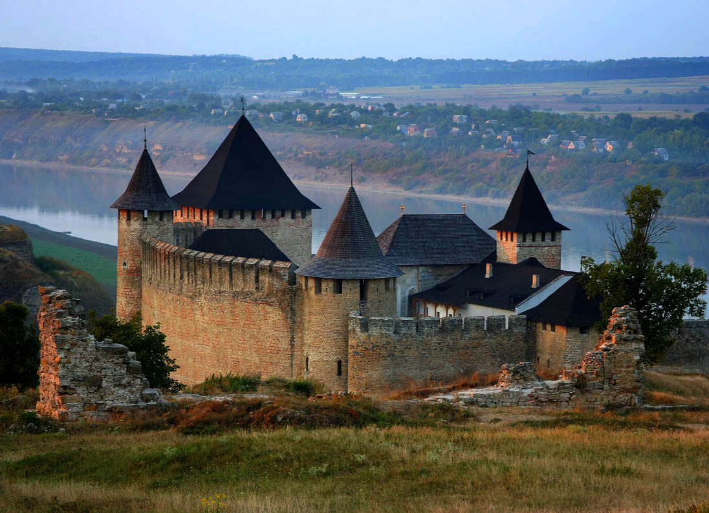
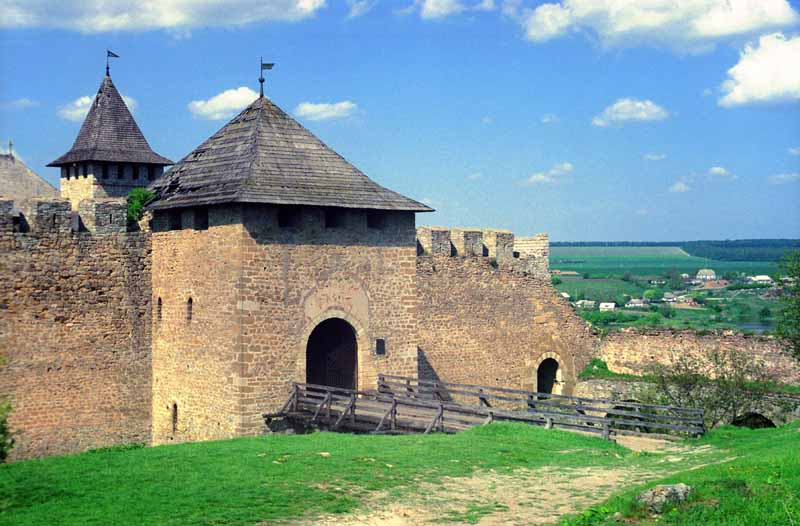

Хотинська фортеця
Розташований на важливих транспортних магістралях, Хотин завжди привертав увагу завойовників. З метою захисту від них була споруджена фортеця, яка пережила століття і бачила під своїми мурами полчища воїнів Османської імперії, повстанців Мухи, народних месників Дитинки, вояків Дмитра Вишневецького, Петра Дорошенка. Під час визвольної війни українського народу проти польської шляхти у Хотин двічі вступали війська Богдана Хмельницького. Хотин приваблює туристів з усього світу. Це одне з найдавніших міст України, яке нещодавно відсвяткувало своє 1000-річчя. На початку XI ст. київський князь Володимир Великий створив систему прикордонних фортець на заході й півдні своєї держави, у тому числі Хотин.
Назва міста, ймовірно, походить від дієслова "хотіти": це місце було завжди бажане для давніх поселенців, вони завжди хотіли жити у цьому красивому і багатому краї (інші версії пояснюють походження назви міста від слов'янського імені Хотин або від імені вождя даків Котизона).
Спочатку це була невелика, збудована східними слов'янами на місці давнього поселення дерев'яна фортеця, яка захищала їх від численних завойовників. Поряд з нею і одночасно з нею існувало неукріплене селище. Укріплення охороняли важливу переправу на Дністрі і стримували грабіжницькі напади степових кочівників. Князь Данило Галицький, хоч і вимушений був підкоритися Золотій орді, не відмовився від боротьби з нею. Він посилено будував нові і укріплював старі фортеці. Виконуючи його волю, в Хотині в 40-50-х рр. XIII ст. замість дерев'яних побудували кам'яні укріплення. Перша кам'яна фортеця була невеликою. Вона була розташована на самому мисі, там де сьогодні стоїть північна башта і простягалася на південь до теперішнього комендантського палацу. Впродовж віків її неодноразово реконструювали та розширювали, руйнували завойовники і знов відбудовували.
Сьогодні Хотин – одне з найбільших міст Чернівецької області, важливий промисловий, туристичний і культурний центр Буковини.
Сьогодні на території Хотинської фортеці створено Державний історико-архітектурний заповідник. Тут полюбляють проводити свята козацької звитяги та знімати фільми.
У 2010 та 2011 роках на території Хотинської фортеці проводився міжнародний фестиваль з історичного середньовічного бою «Битва націй». У 2012 році організатори вирішили провести фестиваль у Варшаві.
Віднедавна фортеця доступна для перегляду у Google Street View.
{kind=link}